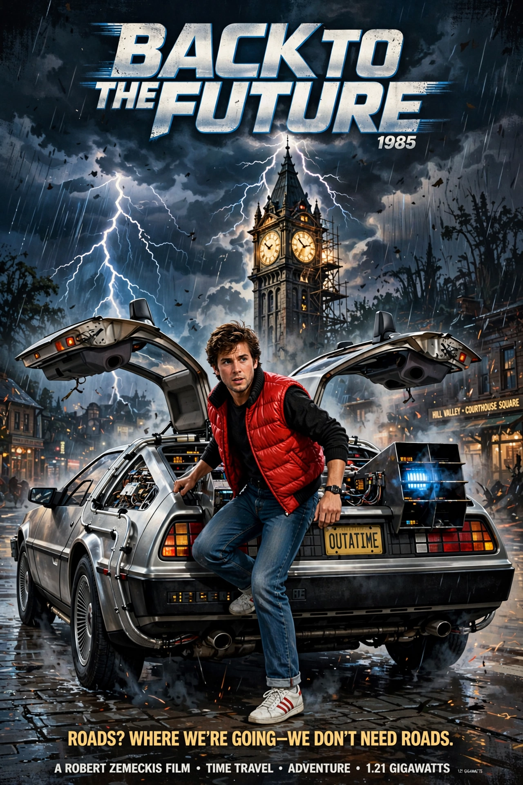

Back to the Future is a 1985 American science fiction film directed by Robert Zemeckis, written by Zemeckis and Bob Gale, and starring Michael J. Fox as teenager Marty McFly, who is accidentally sent back from 1985 to 1955 in a DeLorean time machine invented by eccentric scientist Doc Brown (Christopher Lloyd).

| Back to the Future | |
|---|---|
| Director | Robert Zemeckis |
| Starring | Michael J. Fox, Christopher Lloyd, Lea Thompson, Crispin Glover |
| Released | 3 July 1985 |
| Box office | $388 million |
Stranded in 1955 Hill Valley, Marty must ensure his teenage parents George McFly and Lorraine Baines fall in love — after Lorraine instead becomes infatuated with him — or he will be erased from existence. With young Doc Brown's help, he harnesses a lightning strike at the clock tower to power the DeLorean's flux capacitor and return to 1985, having improved his family's future.
The highest-grossing film of 1985, it won the Academy Award for Best Sound Effects Editing, spawned two sequels (1989, 1990), an animated series, theme-park ride, and a stage musical, and was selected for the US National Film Registry in 2007. Its DeLorean, "1.21 gigawatts", and lines like "Great Scott!" became cultural icons.
Part II · DeLorean · Time travel
Recreated from memory.